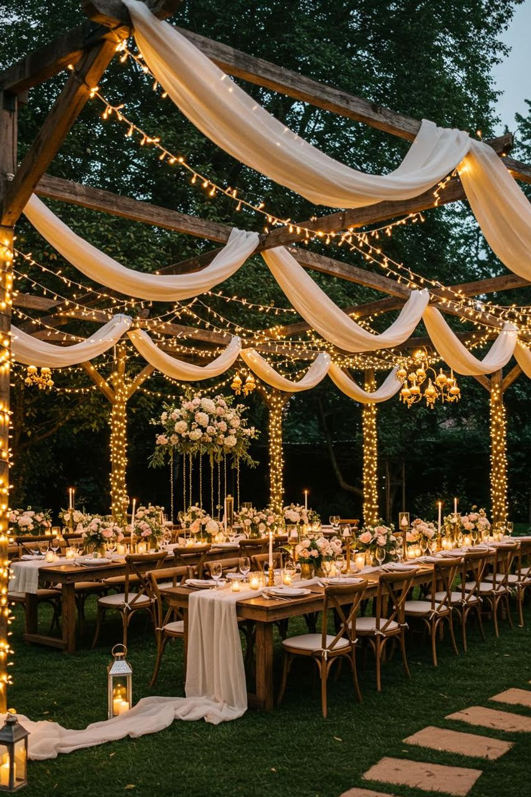

Explorer l’exposition
Réalisée dans le cadre du cours IFT1005 ,cette exposition virtuelle explore l’art de la décoration Evenementielle à travers une diversité d’influences culturelles.
L’objectif de ce site est de montrer comment la décoration devient un véritable langage visuel , capable de transmettre des émotions , de raconter une histoire et de sublimer chaque évènement.
De l’élegance raffinée des inspirations occidentales à la richesse expressive des influences africaines, en passant par la délicatessedes univers asiatiques.
